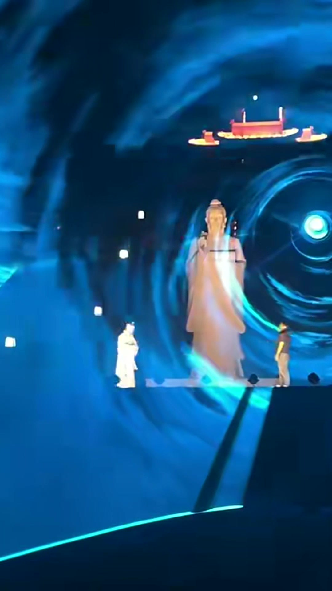

景区光影夜游
围绕广场、草坪、湖面与建筑等空间，将光影节点融入夜间游览体验。

01 / SELECTED PROJECT
把想象，带到真实现场周祖陵景区光影秀，由涵艺团队打造。光束、舞台与演员在夜色中相遇，让光影与演艺共同构成现场体验。
以舞台为观看核心，将光影背景、音乐节奏与演员表演组织在同一现场。场地不同，观看距离、光影尺度与布烟安排也需要随之调整。
SPACES / 光影场景
先看场地，再定光影从游客站在哪里、看向哪里开始，把舞台、光影与文化内容放到合适的位置。
01 / OPEN-AIR THEATER
以舞台表演为中心，在舞台后方组织激光与烟雾光影，结合音乐节奏，让游客获得完整的观看体验。
以上为场地策划方向；页面实拍展示见周祖陵案例。具体呈现需经现场勘查与联调确认。
02 / LIGHT & EXPERIENCE
因地制宜，让内容长在场地里从场地特征出发，结合文化内容、观看动线与运营需求，选择适合项目的光影表达。
围绕广场、草坪、湖面与建筑等空间，将光影节点融入夜间游览体验。
将舞台、舞蹈、音乐与光影叙事串联，让游客进入有情绪、有节奏的现场。
以激光和烟雾介质塑造空间层次，结合现场风况、视距和布烟条件制定方案。
根据载体与在地文化，统筹投影内容、舞蹈编排及现场呈现。
具体设备、光影尺度与观看效果，需结合现场勘查、环境条件及联调结果确认。
03 / FROM VISION TO REALITY
从前期沟通，到现场呈现了解文化主题、场地尺度、供电、观看区域与项目预算。
梳理内容方向、光影形式、演艺结构与实施安排。
推进设备布置、内容测试与演艺排练，依据现场条件调整。
完成现场确认、运行交接，并按合作约定提供后续支持。
04 / ABOUT HANYI
上海涵艺夜游整合旅游发展有限公司
我们聚焦文旅景区光影夜游、沉浸式光影剧与定制化舞蹈演艺，关注文化内容、光影表达与现场实施之间的连接。
我们相信，一场值得记住的夜游，来自对场地的理解，也来自每一个现场细节。
LET'S CREATE A NIGHT TO REMEMBER
告诉我们项目在哪里、希望呈现什么。
从一个想法开始，一起讨论落地的可能。
填写场地、预算和期望效果，生成可复制的沟通内容。
商务电话与官方微信待补充。沟通内容仅在本机生成，请通过您已知的官方联系方式发送。